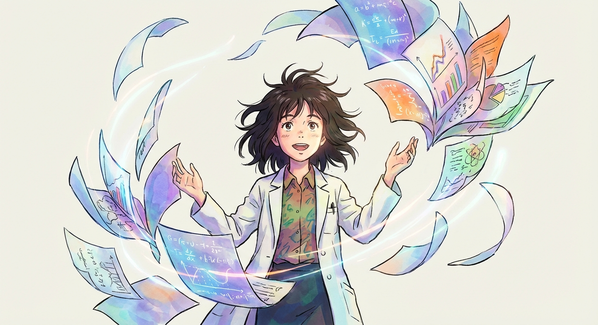
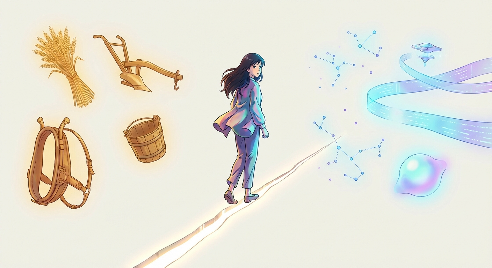

The Golden Age of Research Starts Now
A new wave of citizen scientists is coming, and it will dwarf anything history has seen.
Research is no longer a career. It's a capability.
You probably think research has nothing to do with your life. But your great-grandparents thought the same about office work. In 1900, "clerk" was an elite profession. By 1960, every business had one. Your grandparents thought the same about programming. In 1970, it required a lab coat. By 2000, every teenager had a laptop. The pattern never changes: what starts as a specialized discipline becomes everyone's job. Farming became factory work. Factory work became office work. Office work became knowledge work. Each time, the old generation said "that's not for normal people." Each time, normal people proved them wrong. Now AI is compressing the execution layer of science so dramatically that research is no longer a career. It's a capability. Welcome to the platinum collar.

I never thought I would do research again after my PhD. Most people imagine a scientist's life as a montage of eureka moments, but mine was ninety percent plumbing: debugging CUDA drivers, tracking tons of experiments, reserving GPUs, writing paper rebuttals that felt more like litigation than science. Maybe ten percent was actual thinking. A PhD is boot camp. You survive it, you graduate, and most people never go back. Not because they stopped being curious, but because the experience taught them exactly how much suffering stands between a question and an answer.
Then, a few months ago, I gave research a second chance. And I realized that everything had changed. Not in me, but in the tools. A vague curiosity? It maps the landscape and pinpoints the frontier in hours. A hypothesis? You can design the experiment and verify it by that afternoon. Reproducing someone else's work becomes a one-click affair. And suddenly, there it was again: that feeling. The pure, childlike joy of pulling on a thread and watching a whole tapestry unravel. I was moving at the speed of thought, not just replicating what others had done, but attempting things I never would have dared try before. And that was the real surprise: it wasn't just the speed that changed. It was my entire way of thinking. The old cognitive operating system, where you instinctively ruled things out as "too ambitious," was running on outdated assumptions. I kept catching myself self-censoring out of habit, then realizing: wait, I could actually try that now. It turns out the deeper shift isn't AI-native tooling. It's AI-native thinking: the willingness to shed every mental shackle that the old world trained into you.
It is hard to overstate how good this feels. Curiosity is one of the deepest human drives, and for the first time, the distance between wondering and knowing has collapsed to almost nothing. Research isn't a job anymore. It's the most rewarding thing I do.
Thinking and executing
What is actually driving this? A useful way to think about it is to separate science into two halves: thinking and executing.
For 400 years, every scientist had to be both the visionary and the laborer. Nobody becomes a scientist to be a sysadmin or a data cleaner, but you had to master all of that before you were allowed to be curious. The telescope let Galileo see Jupiter's moons, but he still had to grind the lenses himself. The microscope let Leeuwenhoek see bacteria, but he spent years perfecting the glass. The instrument always came bundled with the craft.
AI is unbundling them. It is collapsing the execution layer, not eliminating it, but compressing it so dramatically that the bottleneck shifts. The things that used to take a team of specialists and months of setup, one person can now attempt in a week. Knowledge that was locked behind years of specialized training is now accessible to anyone willing to ask a clear question.
And this trajectory doesn't stop at digital borders. Soon you will access physical labs remotely, controlling robotics and chemical synthesis equipment just by describing the experiment you want to run. The cost of trying is plummeting.
The execution layer is collapsing. That much is clear. So the question becomes very simple: if machines can do the doing, what is the meaning of a human's job? The only thing left that matters is asking the right questions. Not "what tasks will be left over." That's the wrong framing. The real question is: what kind of work is worthy of a human mind?
Ramanujan's letter
In January 1913, a young clerk in Madras sealed an envelope filled with theorems he had derived alone, on borrowed scraps of paper, because there was no one in his city he could learn from. Srinivasa Ramanujan had already written to two Cambridge mathematicians, Baker and Hobson. Both threw his letter on the pile of crank mail. If G. H. Hardy had done the same, we would never have known Ramanujan existed.
Behind every Ramanujan we know about is a thousand we don't. Minds that asked the right question, in the wrong village, in the wrong century, with no one to receive their letter. The real tragedy of the history of science isn't that discovery was slow. It's that most of the science that should have happened never did.
Look at the arc of the last 2 centuries. Every wave of automation has pushed humans up the cognitive stack, and each time, we underestimated how far the promotion would go.
200 years ago, machines automated physical labor. The blue-collar era. Factory workers mourned the loss of craft, but humanity was promoted to the office. 100 years ago, computers automated routine cognitive work. The white-collar era. Clerks and bookkeepers became analysts and managers. Each transition felt like an ending but turned out to be a beginning.
Now AI is automating complex execution itself. And once again, we are being promoted. This time, into what I think of as the platinum collar: researchers. Not researchers in the old sense of credentialed professionals behind institutional walls, but something the world has never seen before. A teacher in rural India investigating a disease that affects her village. A retired engineer tackling climate modeling. A teenager with no credentials but a burning question, running experiments that would have required a university lab a decade ago.
Blue collar, white collar, platinum collar. The pattern is clear: every time machines absorb one layer of work, humans move up to the layer above. And every time, the new layer turns out to be larger, more creative, and more human than the last. The number of researchers in the world is about to explode, not because institutions are hiring, but because the barriers that kept most people out of research are dissolving.
Taste and obsession
In a world where execution is nearly free, exactly two things become scarce: taste and obsession. These are not talents you are born with. They are qualities you cultivate, and they will define the researchers of the future.
Taste is holding yourself to a high standard when no one is checking your work. It is the boldness to aim for something that has never been done, and the creativity to see a path where others see a wall. It is deep domain knowledge distilled into judgment: the ability to look at a thousand possible directions and say, this one matters. Richard Hamming used to ask his colleagues at Bell Labs, "What are the important problems in your field? And why aren't you working on them?" Most people never ask. Taste is what makes you ask, and what makes your answer worth following.
Obsession is what keeps you pulling the thread after the first ten attempts fail. It is curiosity that refuses to be satisfied with a surface answer. It is the passion that makes you queue another experiment at midnight, not because anyone is watching, but because you need to know. It is the resilience to hear "that won't work" and treat it as data rather than a verdict.
AI makes the impossible merely difficult. But "merely difficult" still requires someone who cares enough to attempt it, and someone wise enough to attempt the right thing. Taste without obsession produces elegant plans that never ship. Obsession without taste produces a thousand experiments that never converge. Together, they are the engine of discovery, and no machine can supply either one. But together, they also make you something new: an orchestrator. You define the reward function, what "good" looks like, what counts as progress, and unleash AI agents to pursue it day and night, while you sleep. You wake up to a hundred experiments completed, a dozen leads worth chasing. The researcher of the future doesn't work harder. They think more clearly about what is worth working on, and let machines do the rest around the clock.
The seam

100 years from now, most humans on Earth will work on questions. The shift from executing tasks to attempting the impossible will look as total, in retrospect, as the shift from farming to factories.
Most generations live entirely inside one paradigm. We get to live across the boundary of two. We are the last generation that will remember what it felt like to do science before AI, and the first to feel what it's like to do science alongside it.
Science is shedding 400 years of accumulated friction. What remains is the very thing that drew us to the unknown as children: the impulse to look at something impossible and say, I want to try.
Now everyone can be a scientist.